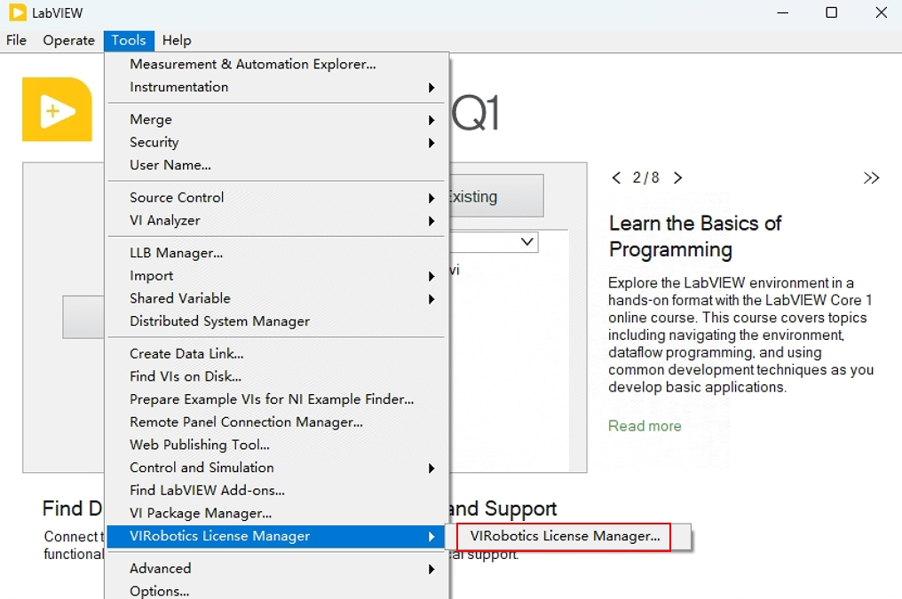
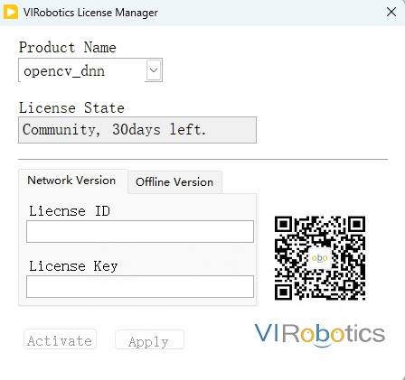
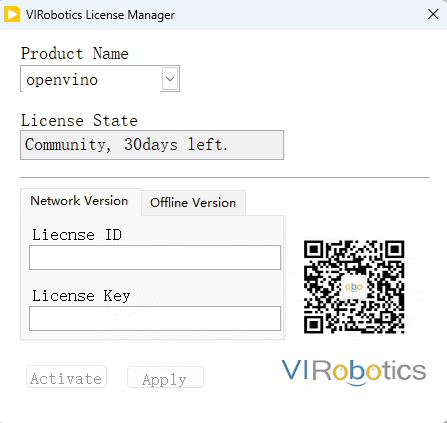
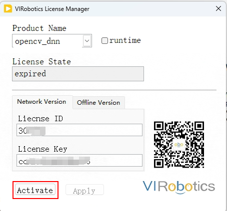
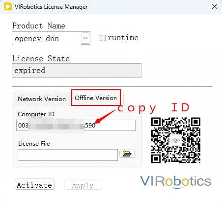
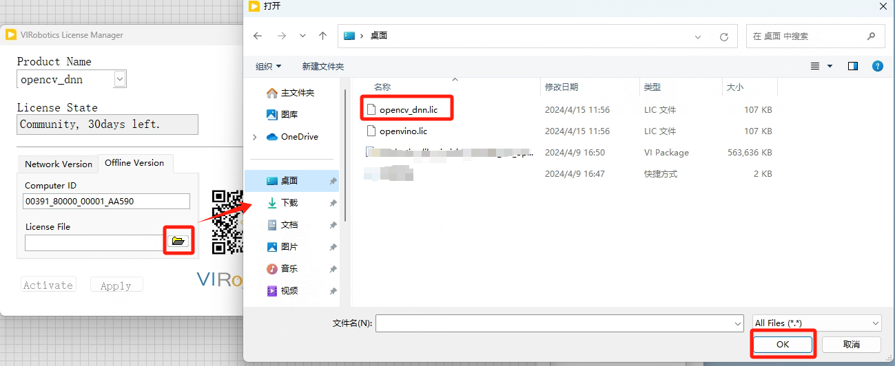
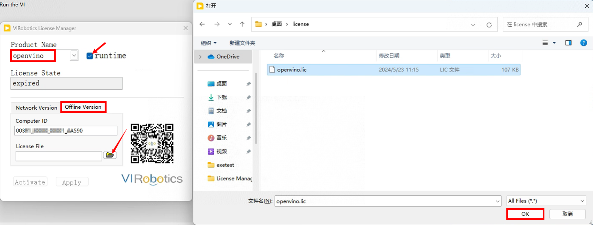

许可证激活
简介
AIVT-OV提供30天的评估期，评估其间工具包需要联网使用，评估期过后需要开发许可证。用户可以通过许可证管理器查看剩余的试用时间或使用情况，还可以通过许可证管理器激活工具包。
打开许可证管理器的具体方法如下：
打开LabVIEW，点击Tools—VIRobotics License Manager—VIRobotics License Manager。
在产品名称部分，可以选择opencv_dnn或openvino，许可证状态将显示有效期。在第一次下载和安装工具包时，这两个产品的许可证状态均设置为30天，即30天的试用期。

该工具包有两种类型的许可证：
开发许可证
部署许可证或运行许可证
开发许可证是继续在LabVIEW中开发需要AI Vision Toolkit for OpenVINO项目所需的许可证。当使用AI Vision Toolkit for OpenVINO工具包开发的应用程序（可执行文件或安装程序）部署到其他设备时，需要部署许可证。
如何激活许可
激活用于开发的许可证
目前工具包开发许可分为两种类型，网络版本和离线版本，为了激活工具包的开发许可，请按照以下步骤来完成激活：
在线激活（推荐使用）
联系VIRobotics获取激活License的ID和Key；
打开LabVIEW，点击Tools—VIRobotics License Manager—VIRobotics License Manager；
Product Name中选择opencv_dnn，输入License ID和License Key，并点击“Activate”激活开发许可，弹出“Activate successfully”字眼即激活成功；

Product Name中选择openvino，输入License ID和License Key，并点击“Activate”激活开发许可，弹出“Activate successfully”字眼即激活成功

到此为止，您的AIVT-OV开发工具包即激活完毕。如果您购买的是永久版，则License State 为"Offline Perament Version",激活之后工具包可以离线使用，如果您购买的不是永久版，则License State 显示为有效期天数，需要联网使用。
离线激活
打开LabVIEW，点击Tools—VIRobotics License Manager—VIRobotics License Manager；
点击“Offline Version”这一栏，提供Computer ID给VIRobotics，工作人员会给您发送相应的许可证文件；

Product Name中选择opencv_dnn，Offline Version—文件按钮--选择对应的.lic文件—点击OK，点击“Activate”即可成功激活, 激活成功后，可以看到License State 为“Offline Perament Version”

同理，Product Name中选择openvino，点击Offline Version—文件按钮--选择对应的.lic文件—点击OK，点击“Activate”即可成功激活，激活成功后，可以看到License State 为“Offline Perament Version”.
到此为止，您的AIVT-OV开发工具包即激活完毕。目前离线激活的默认为离线永久版，激活之后工具包可以离线使用。
激活用于部署的许可证
您可以将Help--Find Examples--Directory Structer--VIRobotics--AI Vision--License Management中的"Open License Manager.vi"打包为exe，如将exe命名为“Open License Manager.exe”，用于后续程序的部署。
目前工具包部署许可仅有一种版本，即永久版，可离线使用。为了激活工具包的开发许可，请按照以下步骤来完成激活：
在线激活（推荐使用）
联系VIRobotics获取激活License的ID和Key；
运行Open License Manager.exe，即可打开VIRobotics License Manager；
Product Name中选择openvino，勾选runtime，输入License ID和License Key，并点击“Activate”进行激活（注意：部署只需激活openvino即可）；

激活成功后，可以看到License State 为“Offline Perament Version”；
到此为止，您的AIVT-OV部署许可激活完毕。目前的部署许可均为永久离线许可，激活之后，您可以离线运行您的exe或者installer。
离线激活
运行 Open License Manager.exe，即可打开VIRobotics License Manager；
点击“Offline Version”这一栏，提供Computer ID给VIRobotics，工作人员会给您发送相应的许可证文件；
Product Name中选择openvino，勾选runtime,点击“Offline Version”这一栏，点击文件按钮--选择对应的.lic文件—点击OK，点击“Activate”即可成功激活, 激活成功后，可以看到License State 为“Offline Perament Version”

到此为止，您的AIVT-OV部署许可激活完毕。目前的部署许可均为永久离线许可，所以激活之后，您可以离线运行您的exe或者installer。
如您在激活过程遇到任何问题，可通过以下方式联系我们
邮箱：support@virobotics.net